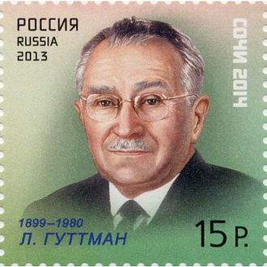
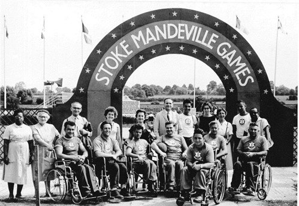
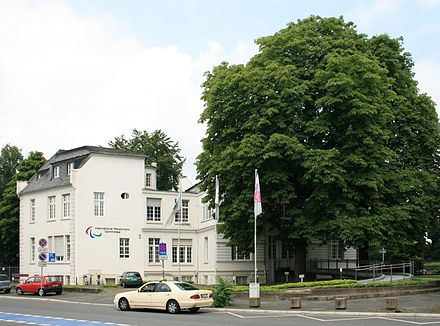

HISTORY OF THE PARALYMPICS
HISTORY OF THE PARALYMPICS
Sport for athletes with an impairment has existed for more than 100 years!!
The first sport clubs for the deaf were already in existence in 1888 in Berlin.
It was not until after World War II however, that it was widely introduced.
In 1944, at the request of the British Government, Dr. Ludwig Guttmann opened
a spinal injuries centre at the Stoke Mandeville Hospital in Great Britain,
and in time, rehabilitation sport evolved to recreational sport and
then to competitive sport!
☆STOKE MANDEVILLE GAMES☆
On 29 July 1948, the day of the Opening Ceremony
of the London 1948 Olympic Games, Dr. Guttmann organised the first competition for
wheelchair athletes which he named the Stoke Mandeville Games, a milestone in Paralympic history.
They involved 16 injured servicemen and women who took part in archery. In 1952, Dutch ex-servicemen
joined the Movement and the International Stoke Mandeville Games were founded

Dr. Ludwig Guttmann
☆FIRST PARALYMPIC GAMES☆
The Stoke Mandeville Games later became the Paralympic Games which first took place in Rome, Italy, in 1960 featuring 400
athletes from 23 countries. Since then they have taken place every four years.
In 1976 the first Winter Games in Paralympics history were held in Sweden, and as with the Summer Games, have taken place
every four years, and include a Paralympics Opening Ceremony and Paralympics Closing Ceremony.
Since the Summer Games of Seoul, Korea in 1988 and the Winter Games in Albertville, France in 1992 the Games have also taken part in the same
cities and venues as the Olympics due to an agreement between the Internation Paralympic committee
and Internation Olympic Committee.

Where it all started...
☆BIRTH OF INTERNATIONAL PARALYMPIC COMMITTEE☆
On 22 September 1989, the International Paralympic Committee was founded as an international non-profit organisation in Dusseldorf,
Germany, to act as the global governing body of the Paralympic Movement.
The International Paralympic Committee is the global governing body of the
Paralympic Movement. It comprises 176 National Paralympic Committees
(NPC) and four disability-specific international sports federations.
The president of the IPC is Andrew Parsons.
The IPC is also needed to supervise and coordinate the World Championships and other competitions for each of the nine sports it regulates.
IPC membership also includes National Paralympic Committees and international sporting federations.
International Federations are independent sport federations recognized by the IPC as the sole representative
of a Paralympic Sport.
International Federations responsibilities include technical jurisdiction and guidance
over the competition and training venues of their respective sports during the Paralympic Games.
The IPC also recognizes media partners, certifies officials, judges,
and is responsible for enforcing the bylaws of the Paralympic Charter.

IPC headquarters in Bonn, Germany
The IPC has a cooperative relationship with the International Olympic Committee (IOC). Delegates of the IPC are also members of the IOC and participate
on IOC committees and commissions. The two governing bodies remain distinct, with separate Games, despite
the close working relationship.
Click here to go pg3!